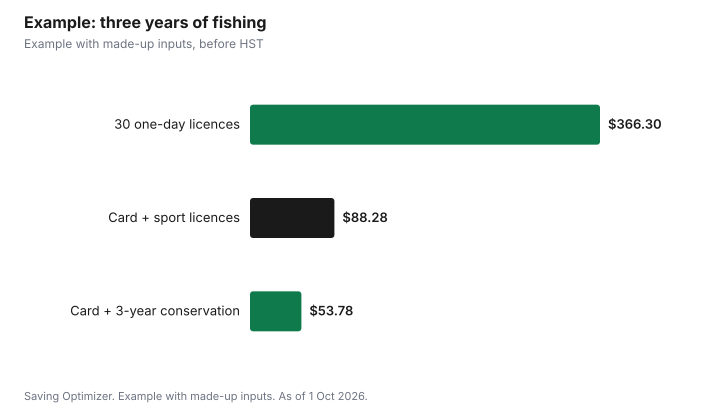

Sports · Canada
Ontario Fishing Licence Cost and the Outdoors Card (2026 Fees)
An Ontario resident aged 18 to 64 who wants to fish all year pays $8.57 for an Outdoors Card plus $26.57 for a one-year sport fishing licence, or $15.07 for a one-year conservation licence, before 13% HST, under the 2026 fees on ontario.ca. The card lasts three calendar years, so a three-year sport licence at $79.71 plus the card works out to about $29.43 a year before tax. If you only fish once or twice, a one-day sport licence at $12.21 needs no Outdoors Card. Anglers under 18 or 65 and older do not need a card or licence at all; they carry government ID instead. Veterans and active Canadian Armed Forces members who live in Ontario also fish free, and everyone can fish without a licence during the four free family fishing periods each year.
Key takeaways
- Outdoors Card: $8.57 plus HST, valid for three calendar years.
- Ontario resident sport licence: $26.57 for one year or $79.71 for three years.
- Conservation licence (reduced catch limits): $15.07 for one year or $45.21 for three.
- One-day sport licence: $12.21, no Outdoors Card needed.
- Free: under 18, 65 and older, veterans and active CAF members living in Ontario, and free family fishing periods.
- Example with made-up inputs: three years of fishing for one adult.
The two pieces: the card and the licence
Ontario's system has two parts. The Outdoors Card is a plastic identification card valid for three calendar years. The fishing licence is valid for either one or three calendar years and is printed on the back of the card when you buy them together. You must buy an Outdoors Card before you can buy a fishing licence, with one exception: the one-day sport fishing licence, which you can buy without a card. Licences are sold online with Visa or Mastercard, at participating ServiceOntario locations and at licence issuers such as many tackle shops, and a three-year licence can be renewed with the card by phone at 1-800-288-1155. When you buy online you get a Licence Summary you can print or save on your phone and use right away, because the plastic card can take up to 20 days to arrive by mail.
2026 fees for Ontario residents
| Product | Fee | Notes |
|---|---|---|
| Outdoors Card | $8.57 | Valid 3 calendar years; required for 1-year and 3-year licences |
| One-year sport licence | $26.57 | Normal catch limits |
| Three-year sport licence | $79.71 | Same as three 1-year licences |
| One-year conservation licence | $15.07 | Reduced catch limits |
| Three-year conservation licence | $45.21 | Reduced catch limits |
| One-day sport licence | $12.21 | No Outdoors Card needed; valid 1 calendar day from midnight |
Sport and conservation licences differ in catch limits, not in where you can fish. A conservation licence has reduced catch and possession limits, which suits anglers who mostly practise catch and release or keep only an occasional fish for dinner. Check the Ontario Fishing Regulations Summary for your zone before you go, because limits, seasons and sanctuaries vary by zone and species.
Fees for Canadians from other provinces and for visitors
A Canadian resident is someone whose primary home is in Canada but outside Ontario and who has lived in Canada for at least six consecutive months during the 12 months before applying. Their fees are higher, and non-Canadian residents pay more still.
| Licence | Canadian resident | Non-Canadian resident |
|---|---|---|
| One-year sport | $55.81 | $83.19 |
| Three-year sport | $167.43 | $249.57 |
| One-day sport | $15.21 | $24.86 |
| Eight-day sport | Not listed | $54.38 |
| One-year conservation | $33.43 | $52.71 |
| Three-year conservation | $100.29 | $158.13 |
Who fishes free
- Anglers under 18 and anglers 65 and older do not need an Outdoors Card or a licence. They must carry government-issued identification showing their name and date of birth whenever they fish; that ID acts as the licence.
- Veterans and active members of the Canadian Armed Forces who live in Ontario have fished free since 1 January 2019. Instead of a card and licence they carry a Canadian Forces Identification Card (NDI 20), a Record of Service Card (NDI 75) or a Canadian Armed Forces Veteran's Service Card, and they follow sport licence seasons and limits.
- Many members of Indigenous communities exercising Aboriginal or treaty rights to fish for food, social or ceremonial purposes within their traditional or treaty territory generally do not need a card or licence.
- Ontario and Canadian residents of any age can fish without a licence during four free family fishing periods each year.
Free family fishing periods
Ontario sets four licence-free periods each year for Canadian residents. In 2026 they were Family Fishing Weekend (14 to 16 February), Mother's Day weekend (9 and 10 May), Father's Day weekend (20 and 21 June) and Ontario Family Fishing Week (27 June to 5 July). The 2027 dates had not been posted on ontario.ca as of 1 October 2026, so check the free family fishing page before planning. During these periods you must follow conservation licence catch limits, obey size limits and sanctuaries, and carry government ID with your name and date of birth. They are a cheap way for a new adult angler to try the sport before buying a licence. If you need gear, TackleShare lends rods and reels for free at locations that include some provincial parks, conservation authorities and libraries.
One-year, three-year or one-day: which is cheapest
The three-year sport licence costs exactly three times the one-year price, so there is no discount for buying ahead; the saving comes from the card. Because the Outdoors Card is valid for three calendar years, buying a three-year licence at the same time means one transaction and no risk of letting the licence lapse in year two. If you are unsure whether you will keep fishing, buy the card and a one-year licence, then add a licence each year the card is valid. The one-day licence makes sense for up to about two days a year: two one-day licences cost $24.42, while the card plus a one-year sport licence costs $35.14 in the first year.
Timing your purchase
Licences run by calendar year, not 12 months from purchase. A one-year licence bought in October expires on 31 December, which is why late-season anglers often buy a one-day licence instead. The Outdoors Card renewal period starts on the first Tuesday of December each year, so if your card expires at the end of 2026 you can renew it then for the coming years. Ontario also says a new licensing system will replace the Fish and Wildlife Licensing Service in early 2027, so expect the purchase website to change; your existing card and licence remain the product you carry. The 2026 fees are in effect until 31 December 2026; check the fee page for 2027 amounts before buying in the new year.
Example with made-up inputs
These numbers are an example with made-up inputs. Sam, 40, lives in Ontario and plans to fish about ten days a year for the next three years, keeping a few fish each season. Option A is a one-day licence every trip: 30 days at $12.21 is $366.30. Option B is the card plus a one-year sport licence each year: $8.57 plus three times $26.57, or $88.28. Option C is the card plus a three-year sport licence: $8.57 plus $79.71, also $88.28, with one purchase. If Sam only practises catch and release, Option D, the card plus a three-year conservation licence, costs $8.57 plus $45.21, or $53.78. All amounts are before 13% HST and use 2026 fees, which may change.
| Option | Three-year cost |
|---|---|
| One-day licences, 30 days | $366.30 |
| Card plus three 1-year sport licences | $88.28 |
| Card plus one 3-year sport licence | $88.28 |
| Card plus one 3-year conservation licence | $53.78 |

Steps to get licensed
- Decide whether you need a licence at all: under 18, 65 and older, veterans and active CAF members living in Ontario do not.
- Pick sport or conservation based on whether you plan to keep fish.
- Buy the Outdoors Card and licence together online, at ServiceOntario or at a licence issuer.
- Save or print the Licence Summary and carry it until the card arrives.
- Read the regulations summary for your fishing zone.
- Mark the next free family fishing period and the December renewal window in your calendar.
Common mistakes
- Buying a one-year licence in late fall and losing it on 31 December.
- Assuming a conservation licence lets you keep as many fish as a sport licence.
- Forgetting ID during a free family fishing period.
- Paying for a licence for a 65-year-old parent who does not need one.
- Ignoring HST when budgeting; fees are listed before the 13% tax.
Related: a hiking gear budget and whether the Discovery Pass is worth it.
Sources
- Government of Ontario, Ontario Fishing Regulations Summary: Recreational fishing licences and fees (updated 4 Aug 2026), ontario.ca, as of 1 Oct 2026. 2026 fees in effect until 31 Dec 2026; 13% HST applies.
- Government of Ontario, Fishing licence for Ontario and Canadian residents, ontario.ca, as of 1 Oct 2026.
- Government of Ontario, Get an Outdoors Card and licence summary, ontario.ca, as of 1 Oct 2026.
- Government of Ontario, Free family fishing, ontario.ca (updated 21 Jan 2026), as of 1 Oct 2026.
- The fishing days and options in the example are made-up inputs.
Frequently asked questions
How much is an Ontario fishing licence in 2026?
For Ontario residents, a one-year sport licence is $26.57 and a one-year conservation licence is $15.07, plus the $8.57 Outdoors Card, all before 13% HST.
Do I need an Outdoors Card to fish in Ontario?
Yes for one-year and three-year licences. A one-day sport licence, $12.21 for Ontario residents, does not need an Outdoors Card.
Do seniors need a fishing licence in Ontario?
No. Anglers 65 and older, and those under 18, do not need a card or licence but must carry government ID with their name and date of birth.
How long is the Outdoors Card valid?
Three calendar years. The renewal period starts on the first Tuesday of December each year.
When can you fish free in Ontario?
During four free family fishing periods a year for Canadian residents. In 2026 they were 14 to 16 February, 9 and 10 May, 20 and 21 June, and 27 June to 5 July.
What is the difference between a sport and conservation licence?
A conservation licence has reduced catch and possession limits and costs less. A sport licence has normal limits.
Researched and drafted with AI assistance and fact-checked against official Canadian sources. How we create content.
Disclosure: Saving Optimizer may earn a commission if a partner link is added later. No partnership is claimed on this page. Education only.